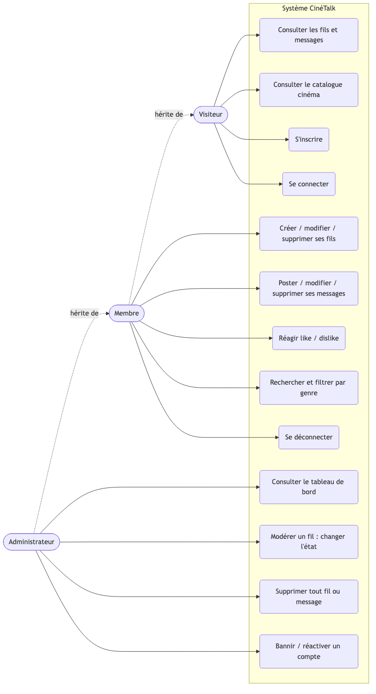
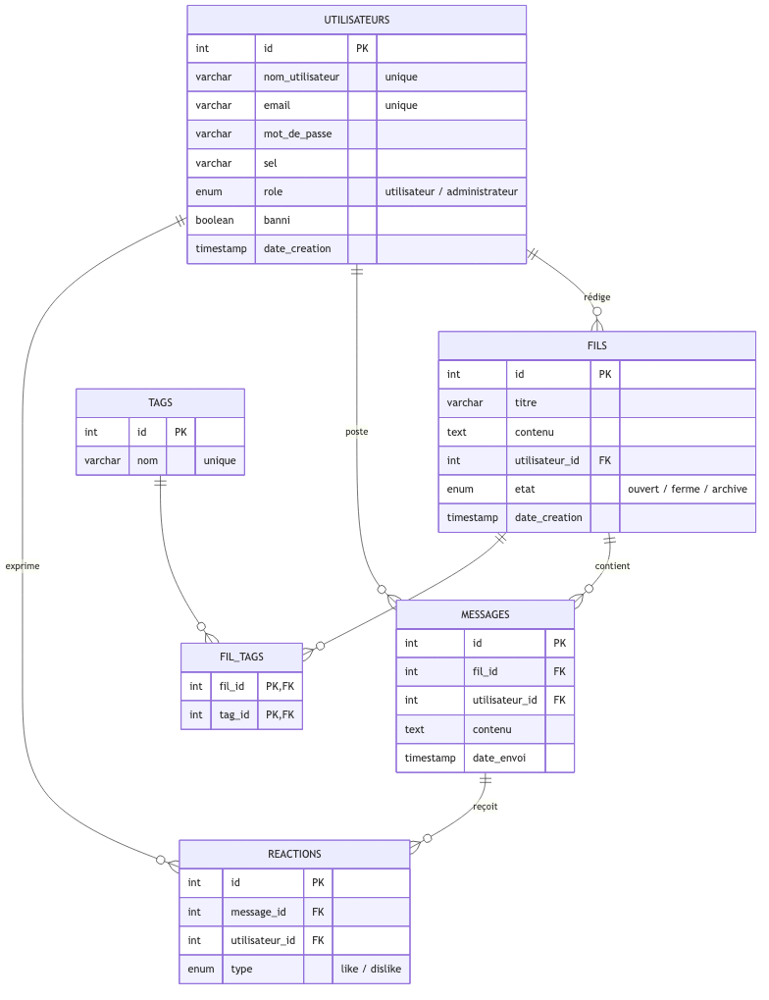

Une plateforme communautaire pour que les passionnés de films et de séries ouvrent des sujets, échangent et réagissent — inspirée de Stack Overflow, Reddit et Discord, appliquée au 7ᵉ art.
Les avis cinéma sont éparpillés. Pas d'espace structuré par genres pour en débattre.
Un forum par fils de discussion, classés par genres, avec réactions et modération.
Un catalogue connecté à l'API TMDB : films, séries et acteurs dans le site.
Inscription & connexion par pseudo ou e-mail.
FT-1 · FT-2Ouvrir, répondre, modifier, supprimer.
FT-3 → FT-7Like / dislike async + score.
FT-6 · FT-8Classer et filtrer les fils.
FT-10Par titre ou genre, réservée aux membres.
FT-1110, 20, 30 ou tout afficher.
FT-9Tableau de bord admin, bannissement.
FT-12Films & séries via l'API TMDB.
BonusTrois rôles, du moins au plus de droits — chacun hérite des actions du précédent.

Le sujet impose 12 fonctionnalités obligatoires, chacune avec ses règles de gestion. Nous les avons toutes implémentées et vérifiées une à une — du contrôle des droits à la cohérence de la base.
Routes (gorilla/mux), rendu serveur (html/template), métier, accès BDD.
Base relationnelle InnoDB, clés étrangères, unicité.
SHA-512 + sel, jeton JWT en cookie HttpOnly.
Uniquement l'UX : réactions like/dislike en asynchrone.
App + MySQL via docker-compose, migrations auto.
Catalogue externe, avec cache mémoire (TTL 10 min).
6 tables liées par des clés étrangères, avec suppression en cascade.

SHA-512 + sel unique par compte — jamais stockés en clair. Règles : 12 caractères, majuscule, caractère spécial.
Jeton JWT signé, en cookie HttpOnly, vérifié à chaque requête par un middleware.
Séparation auteur / administrateur ; un compte banni perd l'accès aux fonctionnalités authentifiées.
Requêtes SQL paramétrées (anti-injection) et validation des entrées côté serveur.
Films, séries et acteurs viennent en direct de The Movie Database. Pour ne pas rappeler l'API à chaque page, les réponses sont gardées 10 minutes en mémoire.
Authentification (JWT, hachage) & administration / modération.
Fils, recherche, catalogue TMDB, interface & Docker.
Messages, réactions & conception de la base de données.
Défi : séparer router / controller / service / repository.
Solution : injection des dépendances, un rôle par couche.
Défi : sécuriser les sessions sans casser la navigation.
Solution : JWT en cookie HttpOnly + middleware.
Défi : API externe, lente et appelée souvent.
Solution : cache mémoire avec expiration.
Défi : coder ensemble sans se marcher dessus.
Solution : Trello + Git, découpage par fonctionnalités.
12/12 fonctionnalités, une architecture propre, une base sécurisée et un bonus catalogue — installable en une commande.